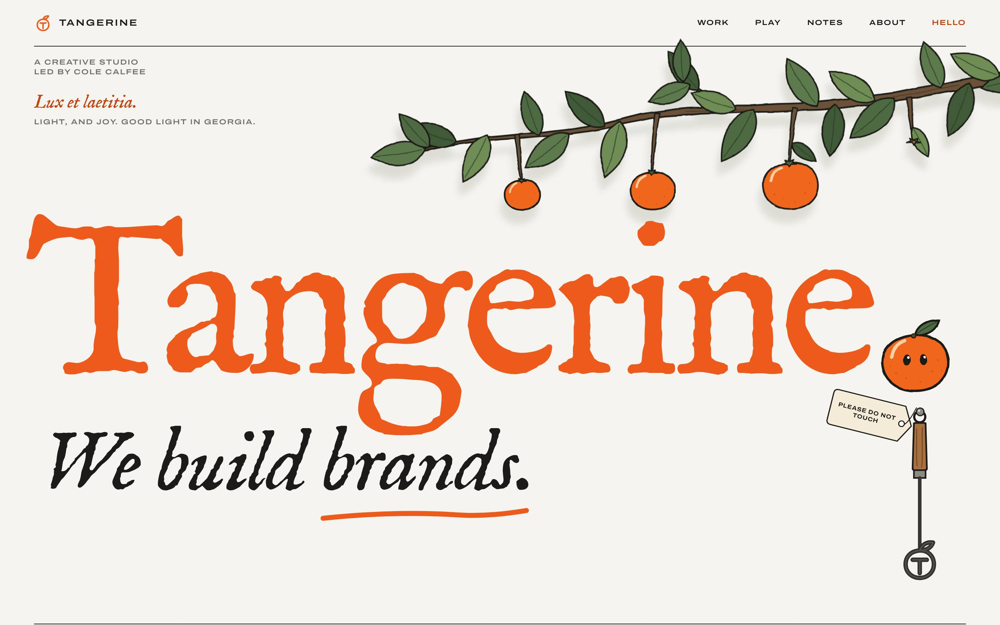
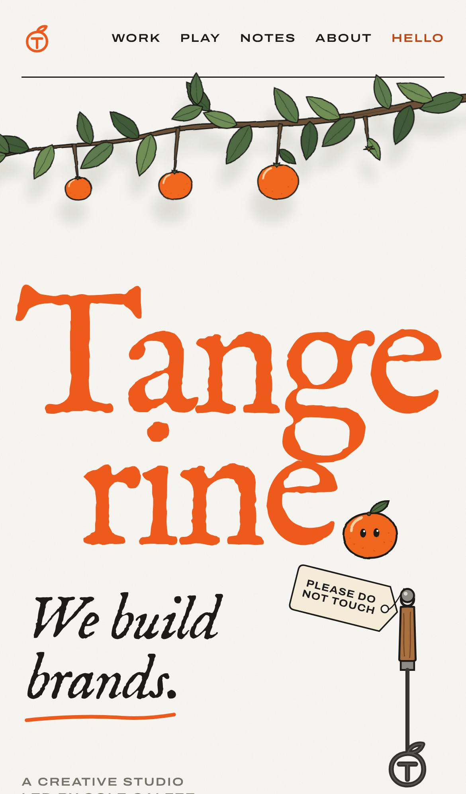

<title>Tangerine Design No. 05</title>
<meta name="claude:viewport-fit-sides" content="cover">
<link rel="preconnect" href="https://fonts.googleapis.com">
<link rel="preconnect" href="https://fonts.gstatic.com" crossorigin>
<link rel="stylesheet" href="https://fonts.googleapis.com/css2?family=Archivo:wdth,wght@62..125,400..900&family=IM+Fell+English:ital@0;1&display=swap">
<style>
/* Review sheet for Design No. 05: the studio's own paper, graphite and one orange. Single light theme by design. */
:root{--paper:#f7f6f2;--ink:#1c1b19;--muted:#6f6b63;--rule:#d9d6cd;--orange:#ee5a1c;--orange-ink:#c4440f;
  --fell:'IM Fell English','Iowan Old Style',Georgia,serif;--grot:'Archivo','Helvetica Neue',Arial,sans-serif;color-scheme:light}
*{box-sizing:border-box}
body{background:var(--paper);color:var(--ink);font:400 19px/1.45 var(--fell);-webkit-font-smoothing:antialiased}
a{color:inherit}
main{max-width:1180px;margin:0 auto;padding-block:40px 80px;padding-left:max(20px,env(safe-area-inset-left,0px));padding-right:max(20px,env(safe-area-inset-right,0px))}
.cap{font:600 10.5px/1.4 var(--grot);font-stretch:125%;text-transform:uppercase;letter-spacing:.09em;color:var(--muted)}
.top{display:flex;justify-content:space-between;gap:16px;border-bottom:1px solid var(--ink);padding-bottom:12px}
h1{font:400 clamp(64px,12vw,150px)/.82 var(--fell);letter-spacing:-.045em;color:var(--orange);margin:36px 0 0 -.04em}
.dek{font-size:clamp(22px,2.4vw,32px);line-height:1.2;max-width:30em;margin:24px 0 0;text-wrap:pretty}
.open{display:inline-flex;align-items:baseline;gap:.4em;margin-top:30px;font:400 clamp(34px,4vw,54px)/1 var(--fell);color:var(--ink);text-decoration:none;border-bottom:2px solid var(--orange);padding-bottom:4px}
.open:hover{color:var(--orange-ink);font-style:italic}
.open:focus-visible,.list a:focus-visible,.hours a:focus-visible{outline:2px solid var(--orange);outline-offset:4px}
section{margin-top:64px;border-top:1px solid var(--ink);padding-top:14px;display:grid;grid-template-columns:200px minmax(0,1fr);gap:16px 32px}
section>h2{margin:0}
.list{list-style:none;margin:0;padding:0;border-top:1px solid var(--rule)}
.list li{display:flex;justify-content:space-between;gap:16px;padding:10px 0;border-bottom:1px solid var(--rule);align-items:baseline}
.list a{font-size:22px;text-decoration:none}
.list a:hover{color:var(--orange-ink)}
.hours{display:flex;flex-wrap:wrap;gap:10px}
.hours a{font:600 11px/1 var(--grot);font-stretch:125%;text-transform:uppercase;letter-spacing:.09em;text-decoration:none;border:1px solid var(--ink);padding:11px 14px}
.hours a:hover{background:var(--ink);color:var(--paper)}
.shots{display:grid;grid-template-columns:minmax(0,3fr) minmax(0,1fr);gap:16px;align-items:start}
.shots figure{margin:0}
.shots img{display:block;width:100%;max-width:100%;height:auto;border:1px solid var(--rule)}
.shots figcaption{margin-top:8px}
.todo{margin:0;padding-left:1.2em}
.todo li{padding:3px 0;max-width:40em}
p.note{margin:0;max-width:40em}
@media (max-width:700px){section{grid-template-columns:1fr}.shots{grid-template-columns:1fr}}
</style>
<main>
  <div class="top"><span class="cap">Tangerine · Design No. 05 · The Studio</span><span class="cap">A study · not published</span></div>
  <h1>The Studio.</h1>
  <p class="dek">Design No. 04, The Grove, grown into a small studio site: the work as plates in the body, play and notes in the margin, and a real archive behind it.</p>
  <a class="open" href="site/index.html">Open the site <span aria-hidden="true">→</span></a>

  <section aria-labelledby="pages-h">
    <h2 class="cap" id="pages-h">Every page</h2>
    <ul class="list">
      <li><a href="site/index.html">Home</a><span class="cap">The grove, the iron, the plates</span></li>
      <li><a href="site/work/index.html">Work</a><span class="cap">The archive, by collaborator</span></li>
      <li><a href="site/work/freeman-globe/index.html">Freeman Globe</a><span class="cap">Case study</span></li>
      <li><a href="site/work/lil-kc/index.html">Lil KC</a><span class="cap">Character file</span></li>
      <li><a href="site/play/index.html">Play</a><span class="cap">The margins, gathered</span></li>
      <li><a href="site/notes/index.html">Notes</a><span class="cap">The notebook</span></li>
      <li><a href="site/about/index.html">About</a><span class="cap">The studio and Cole</span></li>
    </ul>
  </section>

  <section aria-labelledby="light-h">
    <h2 class="cap" id="light-h">The light, by hour</h2>
    <div>
      <p class="note">The page follows the time of day in Georgia. These open the home page at a set hour.</p>
      <div class="hours" style="margin-top:14px">
        <a href="site/index.html?h=7">Morning</a><a href="site/index.html?h=13">Midday</a><a href="site/index.html?h=18.6">Golden hour</a><a href="site/index.html?h=23.2">Night</a>
      </div>
    </div>
  </section>

  <section aria-labelledby="shots-h">
    <h2 class="cap" id="shots-h">Screens</h2>
    <div class="shots">
      <figure><figcaption class="cap">Desktop, 1440 px</figcaption></figure>
      <figure><figcaption class="cap">Phone, 390 px</figcaption></figure>
    </div>
  </section>

  <section aria-labelledby="todo-h">
    <h2 class="cap" id="todo-h">Before it goes public</h2>
    <ol class="todo">
      <li>Freeman’s approval for the Globe study and its case study.</li>
      <li>Kashus Culpepper’s approval to show Lil KC, and the credit line.</li>
      <li>Real files for the ledger lines: Freeman brand, photography and film; Joseph Martin and the Loyal Stricklin collaboration; paintings and photographs.</li>
      <li>Material from ColeCalfee.com, which this session couldn’t reach.</li>
      <li>A contact email beside Instagram, and Cole’s read of the Notes and About copy.</li>
    </ol>
  </section>
</main>
